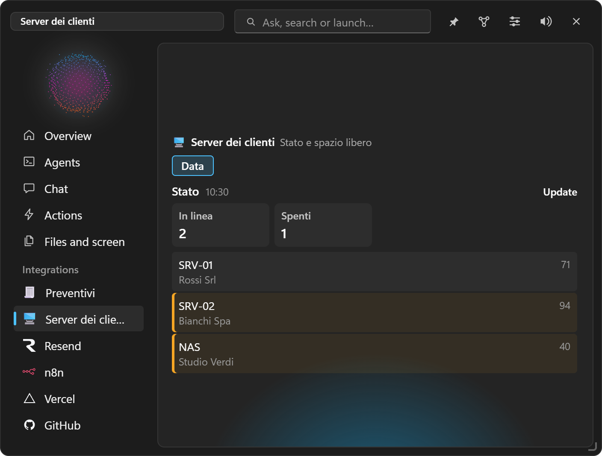

Custom integrations
Ask the chat for the feature you need — a form, a dashboard, a link to an API — and it becomes an entry in the island. No code to write.
#Creating one
Write in the chat what you need, for example:
- "create an integration for quotes, with client, product rows with quantity and price, 22 % VAT and total, that makes the PDF";
- "I want an interventions log with client, date, hours, type and notes, and the month's total hours";
- "make me a dashboard that reads my servers' status from the Uptime Kuma API every 10 minutes and alerts me if one is down";
- "a button that sends the form to my n8n webhook".
The chat proposes useful fields, formulas and actions, asks what isn't clear and shows you the preview of the description with Allow / Deny. Confirming, the integration appears in the island's menu with its icon. To change it just ask ("add a discount field", "make the total bold"): same preview, same confirmation.
Important: a custom integration is a description, never code: its actions are a fixed, safe list.

#What it can have
#Fields
Text, long text, number, amount, date, checkbox, choice and multiple choice, email, phone, link, file (from the Tray), table of rows (with computed columns too), computed (a formula), automatic numbering (e.g. N-2026-0001), link to another integration (e.g. the quote picking a client from the "Clients" records).
- Shown only if: a field visible only when a formula is true (e.g. "IBAN" only if payment = Bank transfer).
- Total in the list: summed or counted in the records list.
#Formulas
A simple language, in Italian or English: + - * / %, comparisons, and / or / not, if(condition; yes; no), sum(quantity*price) over rows, avg, count, round, min, max, dates (today(), days(from; to), adddays(date; 30), year, month), text (upper, concat, contains, len). Never code executed.
#Document template
A Markdown document with {{fields}}, repeated rows ({{#rows}} … {{/rows}}) and the date. Document produces it as printable HTML (from there "Print → PDF") or Markdown, in the Tray.
#Actions (the buttons)
| Action | What it does |
|---|---|
| Save | Saves the record (list with search, open, duplicate, delete) |
| Document | The filled template, in the Tray |
| Copy | The text to the clipboard |
| Ask the AI | A question to the chat with the fields |
| Fill with AI | Paste a mail or a text and the AI fills the fields |
| Link | Opens an address with the fields |
| Quick action | Runs one of your actions |
| Notion | Adds the record to a database |
| Export CSV | All records, for Excel |
| Call a service | GET/POST/PUT/PATCH/DELETE to one of your services' API, with the fields in the body; the response can fill fields and show in a message |
| Task | Starts a task with the fields in the goal |
| Notice | A notice in the island |
| Sequence | Several actions in a row (e.g. save, then call the service, then make the document) |
#Data sources: dashboards
A source reads a service every N minutes (or when you open the tab) and shows values and lists. An alert is a formula on each item: when true, the island alerts you, once per item, and the first line goes to the Overview. An integration can also be just a dashboard, with no form.

#Keys
Services' keys and tokens are written as {{secret:name}} and entered in Settings → Integrations → Made by you: they go into the Credential Manager, only EasyIsland reads them at call time and neither the island nor the chat ever sees them.
#From the chat and tasks
The chat and tasks can read records, add them (with Allow / Deny), read sources and call the actions of your integrations: "how many quotes did I make in October?", "log a 2-hour intervention for Rossi", "check the servers and tell me if anything's wrong".
#Managing them
Settings → Integrations → Made by you: show or hide in the menu, edit the JSON description, enter keys, delete. Files live in %APPDATA%\EasyIsland\integrazioni (description and records, readable).
#Limits, on purpose
- No code: an action does only what its kind provides.
- Calls go only to the services written in the description you approved.
- No data "pushed" by services (incoming webhooks), because that would need an open port on the PC: a source read every N minutes is used instead.
- It works with the PC on.